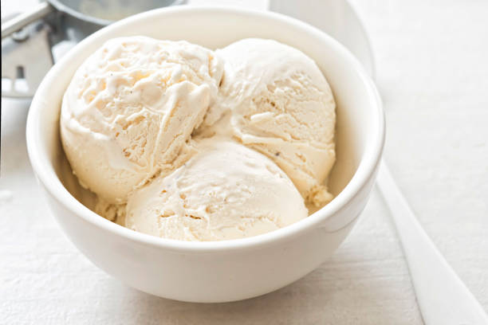

<--Back
Vanilla Ice Cream

Homemade ice cream is the best!
You can easily make it exactly how you want it.
Add your own toppings and use lactose-free ingredients for dietary insensitivities.
Ingredients
- 2 Cups Heavy Whipping Cream
- 2 Cups Half-and-Half or Milk
- 3/4 Cup White Sugar
- 1 Tbsp. Vanilla Extract
Steps
- In a large bowl, combine the heavy cream and half-and-half (or milk). Gradually whisk in the sugar until blended.
- Whisk in vanilla. Refrigerate, covered, until very cold, at least 3 hours.
- Whisk the mixture to blend and pour into canister of an ice cream maker. Run according to manufacturer's directions.
- Pour in any desired mix-ins at end of cycle and serve or freeze for later.